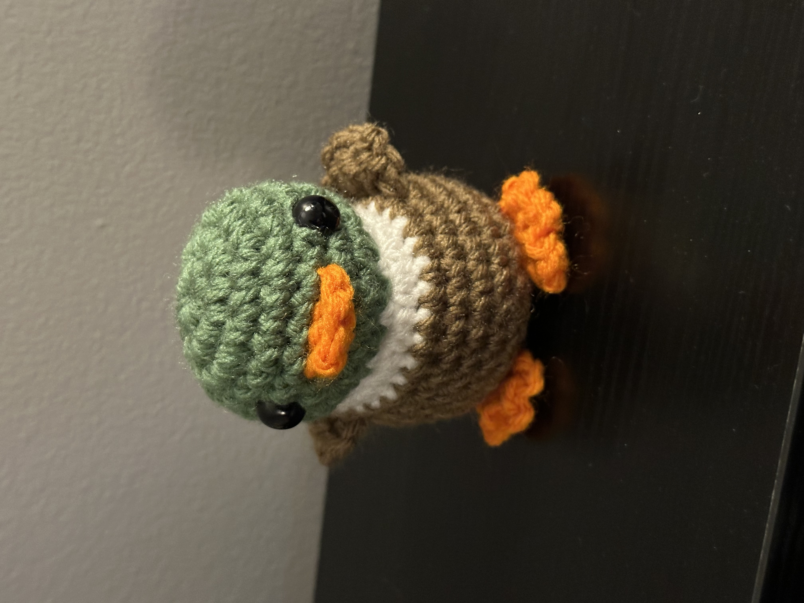
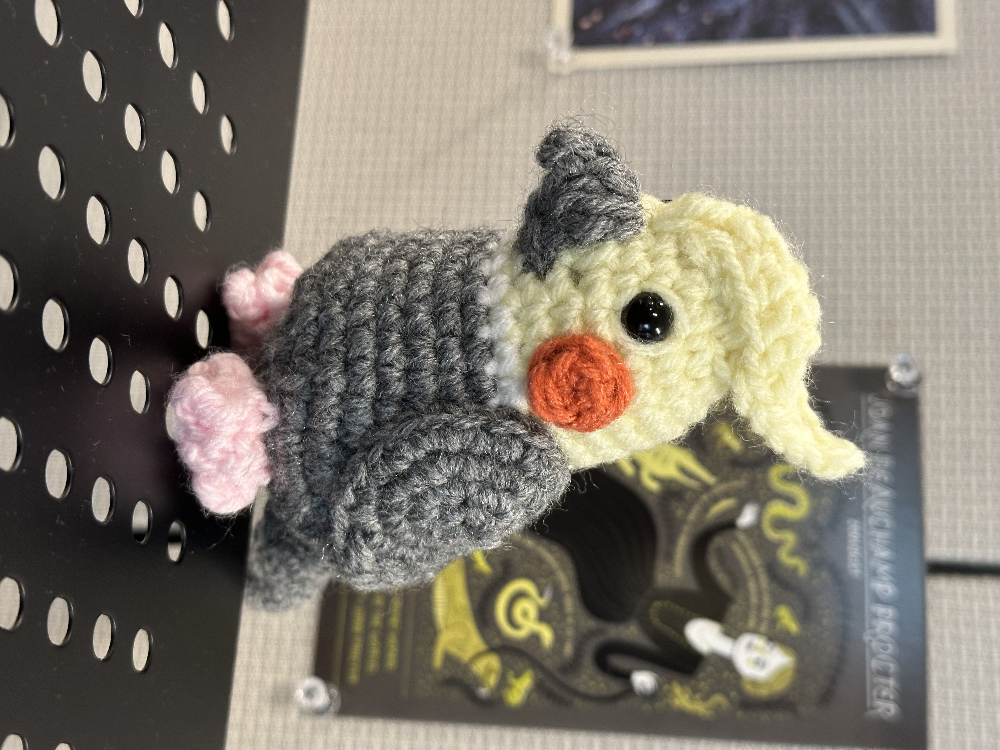
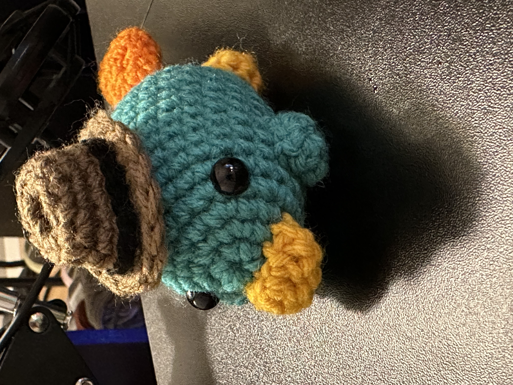
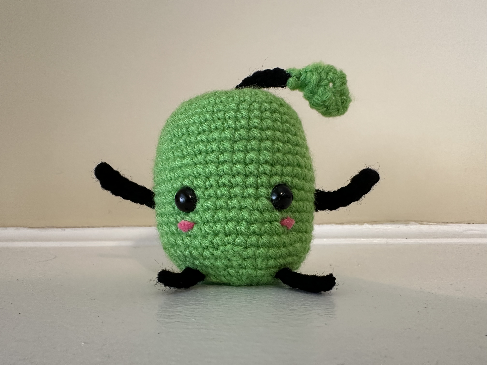

Things I Make Sometimes
I can be crafty every now and then.
Crochet
I got into crocheting amigurumi for a little while. I hope to get back into it again, but it's hard to keep up too many hobbies at the same time. In any case, here are some of my crochet creations.
   A junimo from Stardew Valley.
Polymer Clay and Origami
When I still lived in New York, I attended a Sunday Chinese school. There would be a Chinese class, as well as an elective class. For my electives, I took origami two years in a row, as well as polymer clay two years in a row. I'll add in some pictures if I can find some of my old stuff.